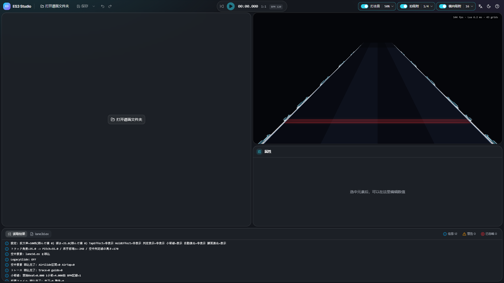
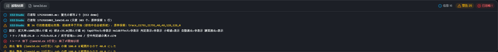
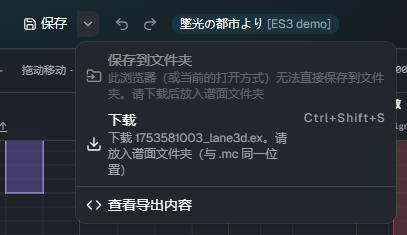
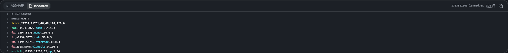

打开与保存
打开谱面文件夹

点击 「打开谱面文件夹」，选择谱面（.mc）所在的歌曲文件夹。请选择文件夹，而不是文件。
- 文件夹中只有一个谱面时，会直接打开
- 有多个谱面时，会出现选择要编辑的谱面的画面。不是 Slide 的谱面、Free Mode 未开启的谱面、已有扩展文件的谱面会带有标记
- 有尚未保存的修改时，打开前会先确认
在 Chrome・Edge 中，浏览器会询问是否允许网站查看文件。允许后即可打开。
读取的文件
从谱面文件夹中读取以下文件。
| 文件 | 用途 |
|---|---|
<谱面名>.mc |
地面音符（编辑后写回）・BPM・谱面的 scroll / jump・音频和背景图片的文件名 |
<谱面名>_lane3d.ex |
要编辑的扩展文件。没有时会新建 |
<谱面名>_chart_3d.ex |
旧名称的扩展文件。仅在没有 _lane3d.ex 时读取 |
<谱面名>_lane3d.src |
谱面编辑器的 ES3 插件的文件。仅在两种 .ex 都没有时读取 |
| 音频 | 用于播放。没有时无声播放 |
| 背景图片 | 铺在预览的背景上（会稍微调暗）。没有时不显示背景 |
读取结果

下方面板的 「读取结果」 中会显示读取的结果。
- 信息：读取的文件和元素数量等
- 警告：可以运行，但最好确认一下
- 已忽略：游戏中也会被忽略的行。ES3 Studio 也不会把它当作元素，但会原样保留这一行并保存
以 [T3D] 开头的行是皮肤脚本输出的日志（与游戏中的日志相同。目前是日语）。
保存

点击 「保存」（Ctrl+S）会保存 <谱面名>_lane3d.ex。如果修改了地面音符，谱面（<谱面名>.mc）也会一起保存。有尚未保存的修改时，按钮上会出现一个点。
- Chrome・Edge：直接写入打开的谱面文件夹。第一次保存时，浏览器会请求写入权限
- 其他浏览器（或无法写入文件夹时）：以下载的方式保存。请把下载的文件放入谱面文件夹（与
.mc同一位置）
点击「保存」旁边的 ▾ 可以选择保存方式。
| 菜单 | 内容 |
|---|---|
| 保存到文件夹 | 直接写入谱面文件夹（仅限在 Chrome・Edge 中打开文件夹时） |
| 下载（Ctrl+Shift+S） | 随时都可以通过下载保存 |
| 查看导出内容 | 打开下方面板的「lane3d.ex」 |
第一次覆盖谱面（.mc）时，会弹出确认。只会改变地面音符的部分（其他部分一个字也不会改）。
如果在 MalodyV 的谱面编辑器中打开着同一谱面，在那边保存时会覆盖 ES3 Studio 中的修改。请先关闭谱面编辑器。
第一次覆盖不是由 ES3 Studio 写出的 lane3d.ex（例如手写的文件）时，会弹出确认。
覆盖后，元素会按时间重新排列，注释等非元素行会集中到开头（行的内容会保留）。
导出内容

下方面板的 「lane3d.ex」 中显示保存后会写入的内容。
- 点击某一行会选中对应的元素（按住 Shift 追加）
- 行号与游戏日志中的「第◯行」一致。游戏中出现警告时，可以在这里找到对应的行
- 点击「复制全部」可以复制到剪贴板
在游戏中确认
保存后，在游戏中重新打开谱面即可生效。请确认皮肤设为 Extra-Slide v3，并且谱面的 Free Mode 已开启。